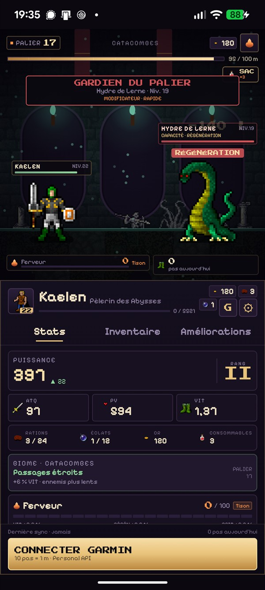
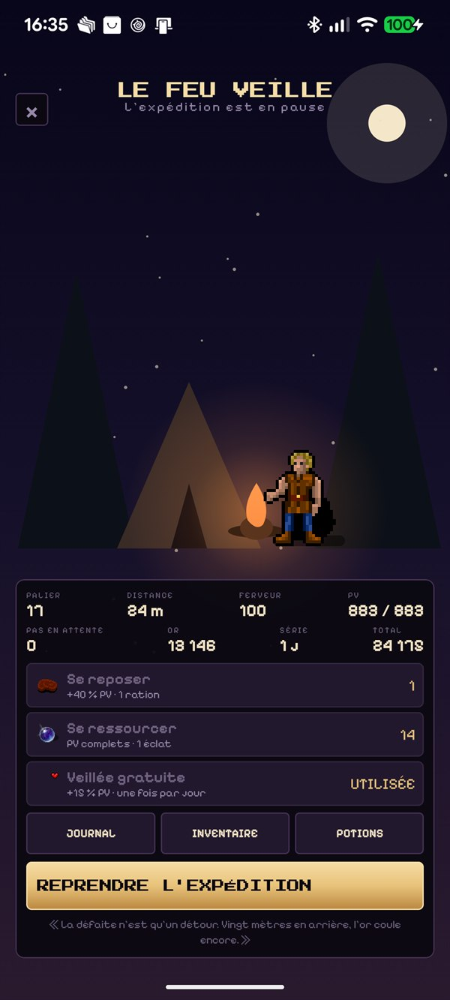
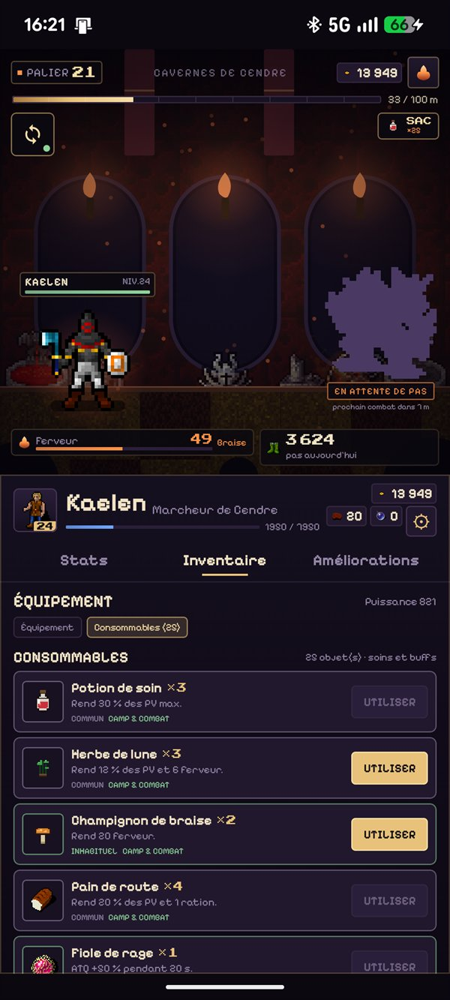
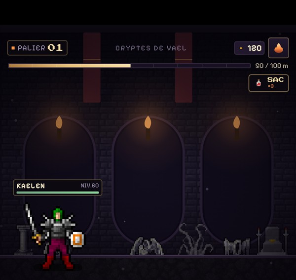
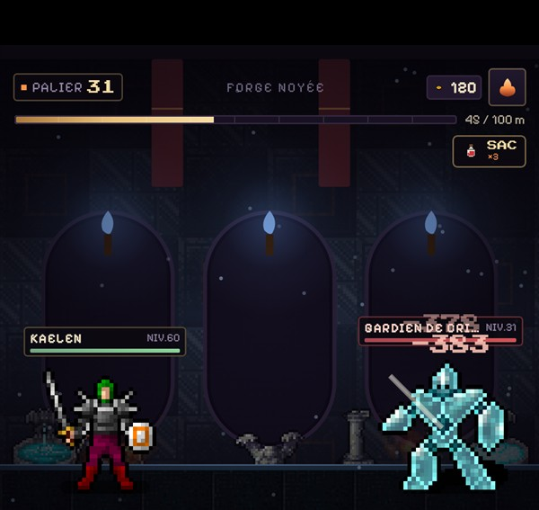
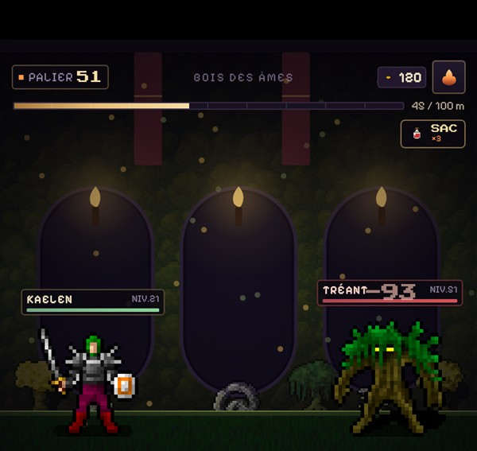
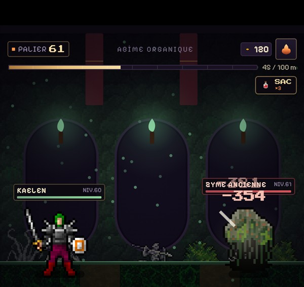
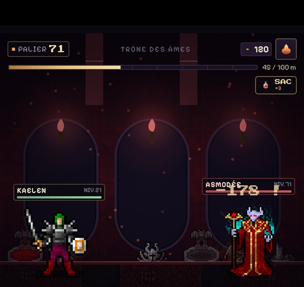
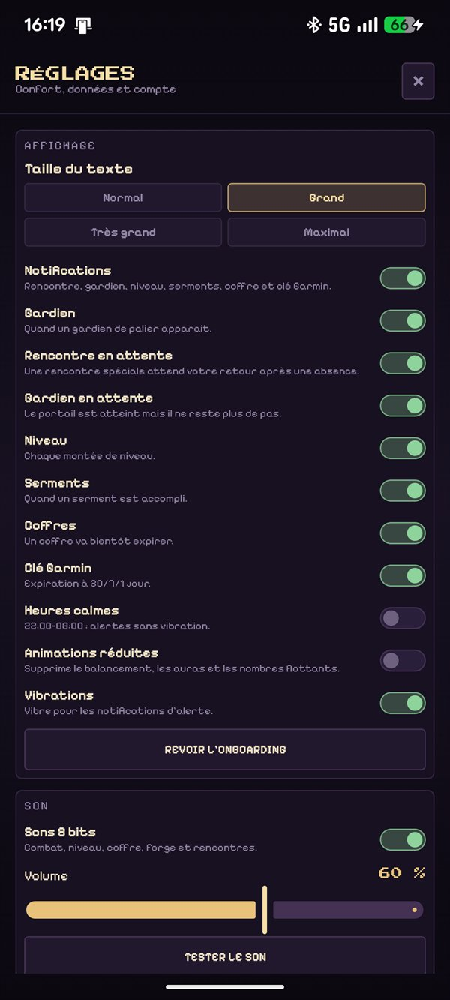
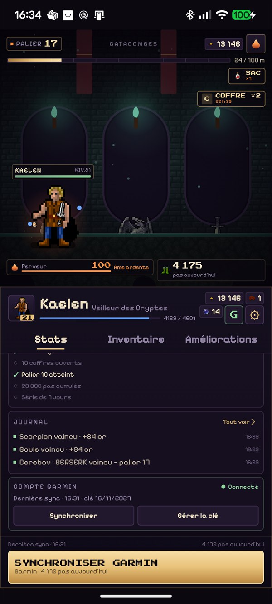

LA MARCHE DES ÂMES
Manuel utilisateur complet — un RPG de marche où vos pas Garmin deviennent votre progression.
Version 0.9.1 · Android 14+ · Garmin Personal API uniquement1. Découvrir le jeu
La Marche des Âmes est un RPG idle et pixel art. Vous ne pilotez ni la marche ni les combats : vous marchez dans la vraie vie, puis vos pas Garmin sont convertis en distance dans un donjon infini.
- Garmin Personal API uniquement : pas de Health Connect, pas d'autre source de pas.
- 2FA dans le navigateur : l'application ne voit jamais votre mot de passe ni votre code Garmin.
- Aucun serveur éditeur : la progression et la clé restent sur le téléphone.
- Vous décidez : forcer un coffre, changer d'équipement, lancer une potion, choisir une rencontre.
2. Installer et connecter Garmin
Installer l'APK
- Téléchargez le dernier APK depuis GitHub Releases.
- Autorisez l'installation d'applications inconnues pour votre navigateur ou gestionnaire de fichiers.
- Ouvrez l'APK et installez-le. Les mises à jour suivantes conservent les données.
Créer la clé Garmin
- Dans le jeu, ouvrez Compte Garmin (bouton
Gou bouton en bas). - Appuyez sur Ouvrir Garmin Connect : la connexion et la 2FA se font dans le navigateur.
- Dans Garmin Connect, créez une Personal API Key et copiez-la.
- Collez la clé dans l'application.
- Saisissez la date d'expiration : Garmin ne l'expose pas via l'API.
- Appuyez sur Tester et enregistrer, puis Synchroniser.
Ce que fait la synchronisation
- Elle lit les 7 derniers jours de pas.
- Chaque jour n'est compté qu'une fois : pas de double comptage.
- Le rattrapage est plafonné à 100 000 pas par synchronisation (un marathon fait environ 45 000 pas).
- Les pas récupérés peuvent être simulés hors ligne : combats, or, paliers.
- La synchronisation tourne toutes les 30 minutes, à l'ouverture et manuellement.
3. La boucle quotidienne
Des pas à la distance
Chaque pas Garmin augmente la réserve de marche. Le héros consomme cette réserve en continu : environ 70 pas/seconde, ou 140 pas/seconde quand la réserve est grande. Un pas n'est jamais consommé deux fois.
- Plafond journalier : 60 000 pas.
- Rythme suspect : au-delà de 250 pas/minute en moyenne depuis la dernière synchronisation, les pas excédentaires sont ignorés et signalés dans le journal.
- Réserve à zéro : le héros s'arrête. Il repart dès qu'une synchronisation apporte de nouveaux pas.
- Rencontres : tous les 10 m. Gardien : à 100 m.
Reset à 00:00
À minuit local : le compteur du jour, la ferveur, les quotas de rations/éclats et les serments repartent à zéro. La distance déjà parcourue, l'or, l'équipement et les paliers sont conservés.
4. Interface et HUD

Bandeau supérieur
- Palier et nom du biome.
- Or et bouton feu de camp.
- Jauge de palier : 0 à 100 m, avec la porte du gardien dans les 15 derniers mètres.
- SAC : consommables, soins et buffs.
- COFFRE : nombre de coffres en attente et temps restant. Un coffre ne bloque jamais la marche.
- Bouton de synchronisation : petit carré en haut à gauche, aligné avec le SAC. Icône ↻ et point d'état (vert = récent, ambre = ancien, rouge = erreur). Appuyez pour synchroniser ; si Garmin n'est pas connecté, il ouvre Compte Garmin.
Scène
- Le héros à gauche, le monstre à droite.
- Barres de vie, noms, niveaux, dégâts flottants, critiques et soins.
- Aura de ferveur derrière le héros, particules de biome, porte du gardien.
Tableau de bord
- Stats : puissance, ATQ, PV, VIT, ressources, ferveur, serments, exploits, journal, compte Garmin.
- Inventaire : équipement, butin, consommables, coffre de camp.
- Améliorations : trois améliorations permanentes et prochain gardien.
- Barre de synchronisation : remplacée par le bouton carré en haut à gauche de la scène. Les détails restent dans la carte Garmin de l'onglet Stats.
5. Combat automatique
Le combat est automatique. Le héros attaque selon sa VIT, l'ennemi selon son intervalle. Les dégâts dépendent de l'ATQ, de la ferveur, du critique et des effets d'équipement.
| Statistique | Effet |
|---|---|
| ATQ | Dégâts infligés. |
| PV | Points de vie maximum. |
| VIT | Vitesse d'attaque et régénération hors combat. |
| Critique | Chance de coup critique (dégâts renforcés). |
| Régénération | PV rendus par seconde. |
Gardiens
- Environ 6× les PV d'un monstre du même niveau.
- Phase 2 sous 50 % de PV : attaques plus rapides, aura embrasée.
- Bénédiction +25 % après une défaite contre un gardien : aide à la tentative suivante.
- Modificateurs possibles : Rapide, Blindé, Berserk, Régénérant, Voleur.
Capacités de gardien

| Capacité | Gardiens | Effet |
|---|---|---|
| Drain d'âme | Liche, Roi des Cryptes | Draine les PV du héros et soigne le gardien. |
| Régénération | Hydre | Rend environ 7 % des PV max du gardien. |
| Frappe lourde | Balrug, démons, bourreaux | Attaque très puissante. |
| Blindage | Golems, gardiens de la Forge | Réduit fortement les dégâts subis pendant 4,5 s. |
| Souffle | Dragons | Gros dégâts et vulnérabilité temporaire. |
| Racines | Tréant, dryades | Ralentit la VIT du héros. |
| Acide | Vases, zymes, horreurs | Dégâts et vulnérabilité temporaire. |
| Pression | Seigneurs du Trône | Dégâts et baisse de ferveur. |
Défaite et repli
- Le héros recule de 20 m et reprend à 60 % de PV.
- Zone de farm : trois combats affaiblis, puis la marche reprend.
- La défaite ne détruit ni or ni équipement.
6. Ferveur
La ferveur est l'élan quotidien. Elle monte avec les nouveaux pas et se consume avec le temps.
| Palier | Seuil | Bonus |
|---|---|---|
| Tison | 0–24 | Aucun bonus notable |
| Braise | 25–49 | +10 % VIT, +20 % régénération, +0,5 % crit. |
| Fournaise | 50–74 | +20 % VIT, +40 % régénération, +1 % crit. |
| Tempête | 75–99 | +30 % VIT, +60 % régénération, +1,5 % crit. |
| Âme ardente | 100 | +40 % VIT, +80 % régénération, +2 % crit. |
- Après 2 heures sans nouveau pas, la ferveur décroît d'environ 1 point toutes les 3 minutes.
- La décroissance est rattrapée même si l'application était fermée.
- Les champignons, herbes et potions peuvent la restaurer.
- Une aura de braise entoure le héros selon son niveau.
7. Ressources
La carte RESSOURCES de l'onglet Stats affiche en permanence : rations, éclats, or et nombre de consommables. Les rations sont aussi visibles dans l'en-tête et dans le camp.
- Rations : soin au camp, soin automatique d'urgence en combat, pain de route.
- Éclats : soin complet, identification, forge, autels.
- Or : améliorations, marchand, statue, forge, pari.
- Butin : les gardiens donnent 2 éclats et 1 ration ; les coffres donnent 1 de chaque.
8. Serments journaliers
Trois objectifs optionnels, renouvelés à 00:00. Les cibles varient selon la date.
| Serment | Exemple de cible | Récompense |
|---|---|---|
| Marche | 2 500 à 4 000 pas | 150 or + 1 éclat |
| Chasse | 1 ou 2 gardiens | 250 or + 2 éclats |
| Curiosité | 1 ou 2 coffres | 100 or + 1 objet inhabituel |
- Les récompenses sont automatiques dès la cible atteinte.
- Un serment non accompli disparaît à minuit sans pénalité.
- La série de jours de marche et les pas de la semaine sont affichés dans la carte des serments.
9. Coffres

| Coffre | Quota | Or | Objet |
|---|---|---|---|
| Bois | 150 pas | 40–80 | Inhabituel |
| Fer | 400 pas | 130–220 | Rare |
| Runique | 900 pas | 380–550 | Épique |
- 24 h de conservation, 2 coffres en attente maximum.
- Un coffre peut être ignoré : la marche continue.
- Consacrer mes pas fige la marche et consomme la réserve pour remplir la serrure.
- Arrêter le forçage rend la marche ; la progression de la serrure est conservée.
- Les coffres lâchent aussi des consommables : 1 à 3 selon le type.
10. Campement

- Se reposer : +40 % PV pour 1 ration.
- Se ressourcer : PV complets pour 1 éclat.
- Veillée gratuite : +15 % PV, une fois par jour.
- POTIONS : ouvre le sac de consommables.
- INVENTAIRE / JOURNAL : gestion et historique.
- Reprendre l'expédition : ferme le camp et applique les pas en attente.
Le panneau affiche palier, distance, ferveur, PV, pas en attente, or, série et total de pas.
11. Inventaire et équipement


Six emplacements
Arme, tête, torse, mains, bottes, talisman. Un objet équipé remplace l'ancien, qui retourne dans le sac.
Raretés
Commun, inhabituel, rare, épique, légendaire. La couleur de la bordure et du nom l'indique. Les objets rares et plus peuvent avoir un effet, un ensemble ou être non identifiés.
Actions
- Équiper le meilleur : compare les six emplacements et équipe chaque amélioration.
- Vendre les communs : convertit les objets communs non verrouillés en or.
- Verrouiller : protège un objet de la vente et de la fusion.
- Fusionner 3/3 : trois objets du même emplacement et de même rareté donnent un objet de rareté supérieure.
- Identifier : 1 éclat révèle les statistiques d'un objet mystérieux.
- Reforger : 2 éclats changent l'effet.
- Améliorer : or + 1 éclat augmentent le niveau et les statistiques.
- Démonter : détruit l'objet contre des éclats.
Ensembles et forge
- Les ensembles Veilleur, Braise, Givre, Ossature, Toile, Cendre, Forge, Serment, Bois, Abîme et Trône donnent des bonus à 2, 4 et 6 pièces.
- Chaque biome privilégie ses propres ensembles dans ses tables de butin.
- La forge se débloque après le premier gardien vaincu.
- Les objets peuvent porter Vampirisme, Rempart, Frénésie, Chasse, Vitalité ou Précision.
- Le héros affiche un paper doll : casque, armure, jambes, bottes et arme changent selon l'équipement porté.
- L'apparence suit la famille d'objet : épée, hache, masse, bâton, dague, lance ou fouet ; cuir, maille, plate ou robe ; capuche, heaume ou couronne ; bottes de cuir ou de métal. La rareté départage les objets sans famille.
- Touchez un emplacement équipé pour ouvrir sa fiche, comparer et voir ses statistiques. Les mains et le talisman ne changent pas le sprite.
Coffre de camp
L'inventaire est limité à 24 objets. Quand il est plein, le jeu compare le nouvel objet au moins bon objet non verrouillé : le meilleur reste dans le sac et l'autre part au coffre. Les objets verrouillés ne sont jamais déplacés automatiquement. Les objets non identifiés utilisent un score provisoire basé sur la rareté et le niveau. Aucun objet n'est détruit : vous pouvez les récupérer un par un ou en bloc.
12. Consommables


Soins et ferveur — camp et exploration
| Objet | Rareté | Effet |
|---|---|---|
| Potion de soin | Commun | Rend 30 % des PV max. |
| Herbe de lune | Commun | Rend 12 % des PV et 6 ferveur. |
| Champignon de braise | Inhabituel | Rend 20 ferveur. |
| Élixir du veilleur | Rare | Restaure tous les PV. |
| Pain de route | Commun | Rend 20 % des PV et 1 ration. |
| Viande séchée | Commun | Rend 25 % des PV et 1 ration. |
Combat — pendant un combat uniquement
| Objet | Rareté | Effet |
|---|---|---|
| Fiole de rage | Inhabituel | ATQ +50 % pendant 20 s. |
| Écorce de fer | Inhabituel | Dégâts subis −40 % pendant 20 s. |
| Poudre d'éclair | Inhabituel | VIT +60 % pendant 15 s. |
| Bombe de feu | Rare | Inflige immédiatement 2× votre ATQ. |
| Élixir de vampire | Rare | 20 % des dégâts rendus en PV pendant 30 s. |
| Parchemin critique | Rare | Critique +50 % pendant 15 s. |
| Champignon berserk | Rare | ATQ +80 %, mais dégâts subis +20 % pendant 15 s. |
| Potion de hâte | Rare | VIT +60 % pendant 20 s. |
| Potion de force | Inhabituel | ATQ +40 % pendant 20 s. |
| Potion de régénération | Rare | Régénération +2 PV/s pendant 30 s. |
Où les trouver
- Monstres normaux : 18 % de chance, 1 objet.
- Gardiens : 1 à 2 objets garantis.
- Coffres : 1 à 3 objets selon le type.
- Départ : 2 potions de soin et 1 herbe de lune.
Les buffs actifs apparaissent à droite de la scène avec leur compte à rebours : RAGE 18s, ÉCORCE 12s, etc.
13. Rencontres spéciales
Environ 8 % des rencontres sont remplacées par un événement. Il n'est jamais obligatoire.
| Rencontre | Choix | Résultat |
|---|---|---|
| Autel de braise | Offrir 2 éclats | +180 XP |
| Source claire | Boire 1 ration | PV complets |
| Marchand errant | Acheter avec de l'or | Objet rare ou épique |
| Statue du serment | Prier 100 or | +15 ferveur, +1 éclat |
| Coffre scellé | Parier 100 or | 45 % : +300 or · 55 % : perdu |
Après chaque choix, une fenêtre RÉSULTAT affiche clairement le gain ou la perte. Pour le pari : « Pari gagné · +300 or » ou « Pari perdu · −100 or ».
14. Progression et contenu
Niveaux et expérience
Les monstres, gardiens, serments et événements donnent de l'XP. Chaque niveau augmente l'ATQ, les PV et la VIT. La courbe ralentit progressivement.
Améliorations permanentes

- Lame affûtée : +3 ATQ par niveau.
- Souffle ancien : +30 PV max par niveau.
- Pas vifs : +2,5 % VIT par niveau.
Jalons
- Tous les 10 paliers : +5 % d'or, 5 éclats, nouveau titre, entrée dans la légende.
- Paliers 10, 25, 50 et 100 : gardiens uniques.
- Après le palier 10, un facteur de profondeur augmente les PV et l'ATQ ennemis.
Biomes
Le donjon traverse 8 biomes, chacun avec ses murs, sols, statues, props, portes et météo. Le changement se fait tous les 10 paliers.
| Paliers | Biome | Ambiance |
|---|---|---|
| 1–10 | Cryptes de Vael | Pierre violette, poussière, portes fermées. |
| 11–20 | Catacombes | Pierre verte, spores, portes runiques. |
| 21–30 | Cavernes de cendre | Roche volcanique, braises, fontaines de sang. |
| 31–40 | Forge noyée | Métal, étincelles, bassins bleus. |
| 41–50 | Cimes du Serment | Glace, neige, cristaux. |
| 51–60 | Bois des Âmes | Herbe, arbres d'or, feuilles. |
| 61–70 | Abîme organique | Slime, spores, acidité. |
| 71+ | Trône des Âmes | Enfer rouge, cendres, portes scellées. |
Règles de biome
Chaque biome applique un modificateur au héros et aux ennemis. La carte BIOME de l'onglet Stats affiche la règle active.
| Biome | Règle | Effet |
|---|---|---|
| Cryptes | Veillée des cryptes | +3 % critique · ennemis fragilisés. |
| Catacombes | Passages étroits | +6 % VIT · ennemis plus lents. |
| Cendre | Air empoisonné | +10 % ATQ · régénération réduite · ennemis agressifs. |
| Forge | Peaux de fer | −6 % dégâts subis · ennemis plus résistants. |
| Cimes | Vent glacial | +8 % VIT · −5 % PV max · ennemis rapides. |
| Bois | Sève ancienne | +0,5 PV/s · ennemis coriaces. |
| Abîme | Acidité | +12 % ATQ · −5 % PV max · ennemis fragiles mais violents. |
| Trône | Pression des âmes | +12 % dégâts gardiens · −8 % PV max · ennemis renforcés. |
Mode farm

Le mode farm se trouve dans la carte BIOME de l'onglet Stats. Il est inactif par défaut.
- ACTIVER : verrouille le palier actuel. Le gardien vaincu ne fait plus passer au palier suivant et revient à 100 m.
- DÉSACTIVER : le prochain gardien vaincu fait avancer normalement.
- Un badge FARM s'affiche dans le HUD tant que le mode est actif.
- Pendant le farm, les jalons sont désactivés : pas de +5 éclats ni d'entrée de légende répétée. Le butin, l'or et l'XP du gardien restent.
- Le réglage est conservé dans la sauvegarde et survit au redémarrage.
Galerie des biomes
Chaque biome possède son décor, sa météo et ses créatures. Le paper doll du héros reflète l'équipement porté.








Créatures et butin
- Chaque biome a ses monstres faciles (0–49 m), intermédiaires (50–84 m), difficiles (85–99 m) et ses gardiens.
- Les tables de butin sont propres au biome : armes, armures, casques, bottes, gantelets et talismans thématiques.
- Les paliers 10, 25, 50 et 100 gardent des gardiens de jalon ; les autres paliers font tourner les boss du biome.
- Les ensembles de biome sont favorisés dans leur région : Ossature et Toile aux catacombes, Cendre dans les cavernes, Forge dans la forge, Serment aux cimes, Bois dans la forêt, Abîme dans l'abîme et Trône au sommet.
Rangs et titres
Le rang progresse avec les paliers : Pèlerin, Veilleur des Cryptes, Pèlerin des Abysses, Marcheur de Cendre, Gardien de la Forge, Souverain des Cimes, Veilleur du Bois, Marcheur de l'Abîme, Légende des Âmes.
15. Journal, légende, bestiaire

- Journal : 80 événements, filtres Favorables / Alertes / Neutres.
- Légende : jalons et hauts faits persistants.
- Bestiaire : nombre de victimes par créature.
- Les événements sont aussi résumés dans l'onglet Stats.
Codex
Le Codex se trouve dans Stats → carte CODEX → OUVRIR LE CODEX. Il suit la collection sur trois onglets.


- Bestiaire : une créature est révélée au premier combat ou à la première victime. Les gardiens sont suivis séparément.
- Ensembles : les pièces du sac, de l'équipement et du coffre comptent. Le bonus 2/4/6 et le prochain palier sont affichés.
- Biomes : un biome est découvert dès que vous atteignez son premier palier. Le Codex affiche sa règle, ses créatures, ses gardiens et ses objets.
- Les objets déjà possédés sont reconnus immédiatement ; les objets ramassés ensuite sont ajoutés à la collection.
16. Réglages

- Taille du texte : Normal, Grand, Très grand.
- Notifications : activées/désactivées, avec cases gardien, niveau, serments, coffres, clé Garmin.
- Heures calmes : 22:00–08:00, alertes sans vibration.
- Animations réduites : supprime le balancement, les auras et les nombres flottants.
- Vibrations : retour haptique des alertes.
- Sons 8 bits : activés/désactivés, volume 0–100 %, bouton Tester le son.
- Vendre les communs automatiquement : convertit les communs au ramassage.
- Sauvegarde : exporter, importer avec aperçu, effacer la progression.
- Journal de synchronisation : derniers résultats Garmin.
- Vérifier les mises à jour : carte dédiée, avec vérification automatique quotidienne facultative.
- Manuel du jeu : ouvre ce guide dans l'application.
- Licences et confidentialité : liens vers les documents du dépôt.
17. Mises à jour
L'application se met à jour directement depuis les releases GitHub, sans Play Store.
- Vérification automatique : active par défaut. Elle interroge GitHub au plus une fois toutes les 24 h, au lancement de l'application.
- Vérification manuelle :
Réglages → Mises à jour → Vérifier maintenant. - Quand une version plus récente existe, un dialogue affiche la version disponible et propose Installer la mise à jour.
- L'APK signé est téléchargé depuis GitHub dans le cache de l'application, puis vérifié par SHA-256 lorsque l'empreinte est publiée dans les notes de release.
- Android demande toujours votre confirmation avant d'installer l'APK. La première fois, autorisez « Installer des applications inconnues » pour La Marche des Âmes.
- Une mise à jour installée avec la même signature conserve la progression, les réglages et la clé Garmin.
- Après l'installation, l'application propose d'ouvrir la page GitHub de la release pour lire les changements. Vous pouvez aussi choisir « Plus tard ».
18. Synchronisation Garmin

Jeton et clé
- La clé personnelle est échangée contre un jeton OAuth2 de 24 h.
- Il n'y a pas de refresh token : l'application redemande un jeton avec la clé.
- La clé et le jeton sont chiffrés dans Android Keystore.
- Une clé expirée ou révoquée provoque une erreur 401 : remplacez-la dans Compte Garmin.
Erreurs fréquentes
| Code | Signification | Action |
|---|---|---|
| 401 | Clé invalide, expirée ou révoquée | Créer une nouvelle clé et la coller. |
| 403 | Accès refusé | Vérifier les droits de la clé Garmin. |
| 429 | Trop de requêtes | Attendre le délai indiqué, puis réessayer. |
| 5xx | Garmin indisponible | Réessayer plus tard. |
19. Questions fréquentes
Le héros est bloqué et n'avance plus.
La réserve de pas est probablement à zéro. Le héros repart à la prochaine synchronisation contenant de nouveaux pas. Vérifiez le nombre de pas du jour et la dernière synchronisation.
Je suis devant la porte du gardien mais il n'y a pas de monstre.
La porte apparaît dès 85 m, le gardien n'apparaît qu'à 100 m. S'il manque 2 m, il faut 20 pas. Le libellé « EN ATTENTE DE PAS » s'affiche quand la réserve est vide.
Le coffre me bloque.
Un coffre ne bloque jamais la marche. « Continuer la marche » ferme sa fiche. Si vous avez lancé « Consacrer mes pas », rouvrez le coffre et choisissez « Arrêter le forçage » : la progression de la serrure est conservée.
La synchronisation renvoie toujours le même nombre de pas.
Garmin n'a pas encore reçu les nouveaux pas de la montre. Ouvrez Garmin Connect, laissez la montre synchroniser, puis appuyez sur Synchroniser.
Je ne vois pas mes rations.
Elles sont dans la carte RESSOURCES de l'onglet Stats, dans l'en-tête (icône viande) et dans le camp, sur les actions de soin.
Mes notifications ne fonctionnent pas.
Vérifiez Réglages → Notifications, puis la permission Android. Sur Android 13+, la permission est demandée au premier lancement. Vous pouvez l'ouvrir depuis les réglages système.
Que se passe-t-il quand l'inventaire est plein ?
Le nouvel objet est comparé au moins bon objet non verrouillé du sac. Si le nouveau est meilleur, l'ancien part au coffre de camp et le nouveau reste dans le sac ; sinon, le nouveau part au coffre. Les objets verrouillés sont protégés. Les non identifiés utilisent un score provisoire rareté + niveau.
Comment sauvegarder ou changer de téléphone ?
Réglages → Sauvegarde → Exporter. Le fichier JSON contient la progression, jamais la clé Garmin. Sur le nouveau téléphone, installez l'app, connectez Garmin, puis Importez la sauvegarde et confirmez l'aperçu.
Puis-je désactiver les sons ou changer le volume ?
Oui : Réglages → Son. Le réglage concerne les effets du jeu, pas les notifications Android.
20. Données et confidentialité
- La progression, les préférences et la sauvegarde restent sur l'appareil.
- La clé et le jeton Garmin sont chiffrés dans Android Keystore.
- L'application ne contacte que Garmin pour les pas et GitHub pour les mises à jour.
- Aucun Health Connect, aucun serveur éditeur, aucune publicité, aucun traceur.
- « Révoquer la clé » supprime la clé et le jeton ; « Effacer la progression » remet le jeu à zéro.
- La politique complète est dans
docs/privacy.md.
21. Licences et crédits
- Code et textes : MIT — brunothesatellite.
- Pixel art : Dungeon Crawl Stone Soup contributors, CC0 1.0.
- Sons 8 bits : générés pour ce projet, CC0 1.0.
- Polices : Pixelify Sans et Press Start 2P, SIL Open Font License 1.1.
- Détails :
LICENSES.md,assets/CREDITS.md,assets/audio/LICENSE.txt.
Merci d'avoir marché jusqu'ici. Bonne route dans les cryptes.